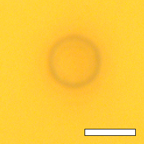
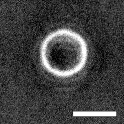
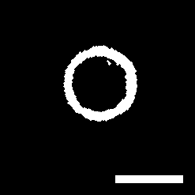
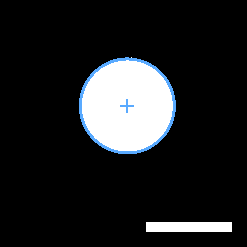
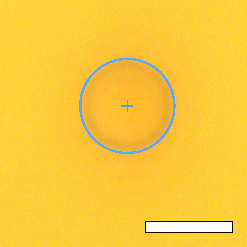

Use this guide as a practical map of the interface. Each section explains what the controls do and how changing them affects the analysis.

Raw image
Preprocessed image
Binary image
Enhanced binary image
Tracking overlayOverview
This software analyzes microscopy TIFF and OME-TIFF videos of a single particle. It displays the raw frame and each processing stage, detects a binary blob, tracks the blob centroid over time, and exports the trajectory with the experimental metadata needed for later comparison.
The detection workflow is intentionally transparent: preprocessing, thresholding, binary cleanup, region measurement, then frame-to-frame tracking. Each processing view is visible so the user can tune the result before committing to a tracking run.
Typical workflow
- Load one or several TIFF/OME-TIFF files. Split acquisitions can be combined into one continuous stack.
- Move through the stack with the frame slider and inspect the raw image.
- Adjust preprocessing while comparing the raw, preprocessed, binary, and enhanced binary panels.
- Run detection on the current frame and set it as the initial reference.
- Start tracking, monitor the overlay and plots, then stop if the detection becomes unstable.
- Save CSV measurements, JSON metadata, and optional diagnostic images.
Image-processing steps
Raw imageThe selected frame is read from the TIFF stack. If a processing square is enabled, only that crop is passed to the image-processing and tracking pipeline.
PreprocessingIntensity operations improve contrast between the particle and the background. Available operations include grayscale conversion, background correction, smoothing, top-hat filtering, inversion, percentile normalization, gamma correction, and CLAHE.
Binary segmentationThe preprocessed image is thresholded. Otsu mode estimates the cutoff automatically; manual mode lets the user choose the cutoff directly.
Morphological cleanupSmall particles, holes, and rough boundaries are cleaned using object-size filtering, opening, closing, and hole filling.
Blob measurementConnected regions are measured with region properties. The selected blob provides the centroid, equivalent radius, area, eccentricity, and axis lengths.
TrackingThe previous particle position guides the next frame. The trajectory is stored in absolute and relative coordinates, with the initial detection as the reference point.
Acquisition and calibration
Particle IDA sample identifier saved with the results. It helps link trajectories to materials, particles, or experimental conditions.
Particle diameterPhysical diameter used to convert pixels into micrometers from the detected radius. Changing it rescales positions, radius, sigma, and stiffness outputs.
Frame intervalTime between frames. It defines the time axis in exported data and time-series plots.
TemperatureUsed in the equipartition stiffness calculation through kBT. Higher temperature increases the reported stiffness for the same positional variance.
Frames to trackControls how much of the stack is processed. Longer tracks improve statistics but take more time and are more sensitive to drift or loss of detection.
Wavenumber, power, noteExperimental metadata saved in the JSON file. These fields do not change the detection, but they make later comparison between experiments easier.
Import and processing region
Fast lazy importOpens large stacks quickly by reading frames only when needed. This makes browsing faster; tracking can still preload the selected frame range for speed.
Multiple-file importCombines split files into a single virtual video when frame dimensions match. This is useful when microscope acquisitions are saved in parts.
Processing squareRestricts computation to a square crop. This can speed up analysis and reduce false detections from distant artifacts.
Square position and sizeMoving the square changes the region analyzed. A smaller square is faster and cleaner, but must remain large enough to contain the particle throughout tracking.
Preprocessing controls
Convert to grayscaleUses a single intensity channel for processing. Keep enabled for most bright-field or grayscale microscopy data.
Background correctionRemoves slow illumination variation. Subtraction highlights local contrast; division compensates shading and uneven illumination.
Background sigmaSets the spatial scale of the estimated background. A larger scale preserves broad particle features; a smaller scale removes more local structure.
Gaussian smoothingSuppresses high-frequency noise before segmentation. Too much smoothing can soften the particle edge.
Top-hatEnhances local objects relative to background. The radius controls the size of features treated as background.
Invert imageSwaps dark and bright features. Use when the particle becomes easier to segment after contrast inversion.
Percentile normalizationClips extreme intensities before rescaling. This stabilizes contrast, but very strong clipping can saturate useful detail.
Gamma correctionChanges mid-tone contrast. Lower gamma brightens weak structures; higher gamma emphasizes strong bright regions.
CLAHEApplies local adaptive contrast enhancement. It can reveal weak particles, but excessive local contrast may amplify noise.
Blob and binary controls
Blob top-hat radiusControls background removal in the blob-specific pipeline. It changes how strongly the particle is isolated before thresholding.
Invert before top-hatUseful when the particle is dark in the raw image but should become bright for segmentation.
Threshold methodOtsu is automatic and convenient; manual mode is useful when background, halos, or noise confuse the automatic threshold.
Manual thresholdForeground cutoff used in manual mode. Raising it keeps stronger pixels only; lowering it includes weaker signal and possibly noise.
Area limitsReject objects that are too small or too large. This helps remove dust, fragments, merged blobs, or background artifacts.
Opening radiusRemoves small protrusions and isolated pixels. Too much opening can erode the particle.
Closing radiusFills small gaps and smooths boundaries. Too much closing can merge nearby regions.
Hole fillingFills internal holes to create a more compact blob, often closer to a disk-like particle.
Choose by predictionDuring tracking, selects the region nearest to the previous position instead of relying only on size.
Tracking, plots, and exports
Initial detectionDefines the reference point. Relative x and y trajectories are computed from this initial validated position.
Maximum displacementRejects jumps that are too far from the previous accepted position. Lower values are stricter; higher values tolerate faster motion.
Keep radius constantStabilizes the pixel-to-micrometer calibration by avoiding frame-to-frame radius fluctuations.
OverlayDraws the detected center, radius, and trajectory on the image. This is a visual check and does not change the calculations.
Histograms and time tracesShow relative x, y, radius, and temporal behavior. They help reveal drift, segmentation failures, and sudden jumps.
Stiffness estimateComputed after tracking from the variance of the detrended relative x trajectory using the equipartition relation.
CSV exportStores frame-by-frame measurements: time, absolute and relative position, radius, detection status, quality, and method.
JSON exportStores metadata and the current settings at save time, so the file reflects the parameters used for interpretation.